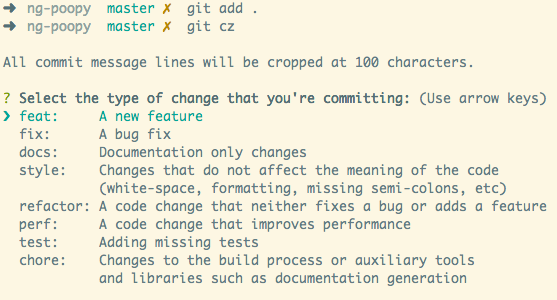
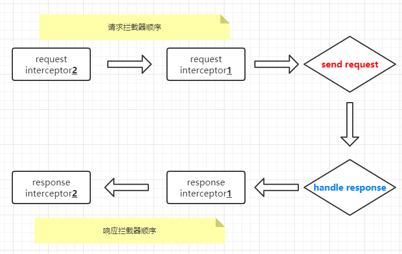

本次项目是对自己用 TypeScript 造的一个轮子的总结，麻雀虽小，但已经尽量五脏俱全，希望各位能多多 star(摩多摩多~)，毕竟项目地址都在这儿了各位 QAQ
环境搭建
使用的工具库
这里罗列下使用到的一些工具库吧
rollupjs
这是一个帮助 txios 项目打包的库，打包方面没有选择 Webpack 的原因是因为这个比较好配置, API 简单。并且由于其基于 ES2015 模块，比 Webpack 使用的 CommonJS 模块机制更加高效，同时也更加容易执行
tree-shakingprettier/tslint
这两个是比较重要的代码风格检查工具库了，在写一些工具库的时候尤其需要注意配合使用的
typeDoc
文档生成工具，毕竟写一个库需要自动生成文档给开发者看，并且这个库也能帮忙部署到 Github page 上
commitizen
主要用来规范 commit 提交信息，这个是很有好处的，清晰和规范的提交可以看出你对修改过的文件做了什么，这个是很重要的
Semantic-release
这个库主要用来处理自动化版本管理和包发布用的。
husky
使用这个工具，可以在每次的 git commit 之前执行已经定义好的 hook 脚本，可以用来自动化的检查代码质量
conventional-changelog
当写完一个工具库，你做了啥修改，使用这个配合 Commitizen ，在生成 release 包时会自动将你所修改的 changeLog 发布出来
jest
著名的测试工具库，主要是用于一些工具库或者 UI 组件库的测试。一般而言是配合
chai、sion使用
⚠: 1.如果搭建环境过程中碰到了
permission denied之类的字样，请关闭 vscode 试试
⚠: 2.如果在项目中执行
semantic-release时遇到了类似这样的错误SemanticReleaseError: No GitHub token specified，请首先去你的 github 账号的 settings 那里的 Developer settings 里新建一个 Personal access tokens ( 具体可参考我写的一篇博客 )，然后再到本地执行export GITHUB_TOKEN="你的 token"，最后再执行semantic-release即可。我想了下这可能是由于semantic-release是读取系统当前用户的环境变量所导致的，本地的 travis 并没有将其设置进环境变量中，而只是设置到项目的.travis.yml配置文件中了
项目结构
一般来说，这里是先建立 src 以及 test 文件夹，src 就存放源码部分，test 就存放测试代码部分, examples 就存放代码的用例，当然这个用例跟测试用例是不一样的，这个只是方便写出了功能做调试用。你可以理解为 examples 就是这个库的一个应用了，可以在 examples 目录下新建一个 webpack.config.js，里面利用 webpack 的 HotModuleReplacementPlugin 插件建立模块热替换，当更改了模块之后就可以进行局部更新了。
这里还要强调的部分是对 entry 做了处理，因为 examples 下面有多个 demo 目录，而每个 demo 目录下都有 app.ts 文件作为这个 webpack 的入口文件, 因此 entries 需要收集 examples 下的这些个 app.ts，因为每个入口又引入了一个用于热更新的文件，所以看到的 entry 的配置基本如下
... |
而基本上可以看到这里就是典型的多入口配置，代码的逻辑其实很简单
- 读取当前目录下的各个 demo 目录的
app.ts - 构建诸如
{'demo': ['webpack-hot-middleware/client', './demo/app.ts']}这样的entries对象 - 返回这个
entries对象
那么为何要加上这个 webpack-hot-middleware/client 呢？先别急，我们先在 examples 目录下构建这样一个 server.js 文件，然后引入 webpack 以及 webpack.config.js
const webpack = require('webpack'); |
这里我们是通过 node server.js 来启动这个应用，然后引入 webpack 以及 webpack.config.js 来打包这个应用，然而这里我们还要引入一个包叫 webpack-hot-middleware，如果需要做热更新的话，需要在每个入口文件处引入 hot middleware client，具体的做法就是上面说的，在入口文件处添加 webpack-hot-middleware/client 就好
添加完后，在 server.js 中添加
const webpackHotMiddleware = require('webpack-hot-middleware'); |
examples 目录下应用 demo 的目录基本是这样的形式，demo 有两个文件
app.tsindex.html
// demo/app.ts |
// demo/index.html |
其他工具的配置
说几个比较重要的
非工作流工具配置
编辑器的配置，用于规范团队代码、文档在 vscode 上的统一编辑以及显示的
.editorconfig// .editorconfig
#root = true
[*] # 表示匹配所有文件
end_of_line = lf # 当一行文字被回车时，对应的回车字符为 lf
charset = utf-8 # 使用 utf-8 编码
trim_trailing_whitespace = false # 不从行尾删除空白
insert_final_newline = true # 文件以换行结束
indent_style = space # 以空格作为 tab
indent_size = 2 # tab 间距为 2 个 space 宽度
[{*.yml,*.json}] # 匹配 .yml .json 文件
indent_style = space # 以空格作为 tab
indent_size = 2 # tab 间距为 2 个 space 宽度检查正在编辑的代码的语法的
.eslintrc// .eslintrc
{
"parserOptions": { // 解析选项
"ecmaVersion": 2017 // 使用 es2017
},
"env": {
"es6": true // 支持 es6 以及新的 es6 全局变量
}
}用于检查编写的 js 代码中的可疑部分的
.jshintrc// .jshitrc
{
"esversion": 6 // 指定代码必须遵循 es6 版本
}用于指定 TypeScript 编译选项的
tsconfig.json// tsconfig.json
{
"compilerOptions": { // 编译选项配置
"moduleResolution": "node", // 以 Nodejs 方式 resolve 模块
"target": "es5", // 指定 es 的目标版本，其默认是 es3
"module":"es2015", // 指定模块代码以 es2015 的方式生成
"lib": ["es2015", "es2016", "es2017", "dom"], // 指定要包含在编译中的库文件列表(编译时要包含进 es5/6/7 以及 DOM 的一些 API)
"strict": true, // 启用所有的严格类型检查选项
"sourceMap": true, // 编译后要生成 .map 源码映射文件
"declaration": true, // 编译后要生成 .d.ts 声明文件
"allowSyntheticDefaultImports": true, // 默认允许 import 那些没有进行 default export 的模块(这不影响代码的 export，只是会影响到类型检查)
"experimentalDecorators": true, // 启用对 es 装饰器语法的支持
"emitDecoratorMetadata": true, // 启用对 reflect-metadata 库的支持
"declarationDir": "dist/types", // 定义编译后生成的声明文件的输出目录为 dist/types
"outDir": "dist/lib", // 定义编译后代码文件的输出目录为 dist/lib
"typeRoots": [ // 编译过程中只考虑编译 node_modules/@types 下的包
"node_modules/@types"
]
},
"include": [ // 只编译 src 下的源码文件
"src"
]
}用于检查编写的 ts 代码中可读性、可维护性和功能错误的
tslint.json// tslint.json
{
"extends": [ // 指定使用 tslint-config-standard 和 tslint-config-prettier 来检查
"tslint-config-standard",
"tslint-config-prettier"
]
}用于测试代码的
jest.config.js// jest.config.js
module.exports = {
"verbose": true, // 指定在运行期间需要报告测试结果
"transform": { // 转换器
".(ts|tsx)": "ts-jest" // 使用 ts-jest 对 .ts/.tsx 文件代码进行测试
},
"testEnvironment": "jsdom", // 使用 jsdom 来作为测试环境
"testRegex": "(/__tests__/.*|\\.(test|spec))\\.(ts|tsx|js)$", // 测试 __test__ 目录下所有的以 .test/.spec 作为中间名的、以 .ts/.tsx/.js 结尾的文件
"moduleFileExtensions": [ // 模块文件拓展，测试文件中引入的模块支持 .ts/.tsx/.js 模块
"ts",
"tsx",
"js"
],
"coveragePathIgnorePatterns": [ // 执行测试时需要过滤掉的一些目录 node_modules 和 test
"/node_modules/",
"/test/"
],
"coverageThreshold": { // 代码测试覆盖率设定
"global": { // 指定一个全局的设定
"branches": 90, // 测试能覆盖到 90% 的代码分支
"functions": 95, // 测试能覆盖到 95% 的函数
"lines": 95, // 测试能覆盖到 95% 的代码行数
"statements": 95 // 测试能覆盖到 95% 的声明
}
},
"collectCoverageFrom": [ // 从以下文件中收集测试代码覆盖率的信息
"src/*.{js,ts}", // src 下的当前目录的 .js 或者 .ts 文件
"src/**/*.{js,ts}" // src 下的子目录的 .js 或者 .ts 文件
],
"setupFilesAfterEnv": [ // 在测试之前需要运行的一些启动或者配置文件
"<rootDir>/test/boot.ts" // 项目根目录下的 test/boot.ts
]
}在
boot.ts中写了什么呢// test/boot.ts
const JasmineCore = require('jasmine-core')
// @ts-ignore
global.getJasmineRequireObj = () => JasmineCore
require('jasmine-ajax')因为这里需要测试 ajax，所以这里用到了
jasmine-ajax，而这个库依赖于jasmine-core。而为了能让jasmine-ajax这个插件运行成功，需要手动添加全局的getJasmineRequireObj方法，这样每次在启动测试的时候都会去加载这个插件，那么在测试时就可以使用jasmine-ajax了用于整理和打包库的
rollup.config.js// rollup.config.js
import resolve from 'rollup-plugin-node-resolve'
import commonjs from 'rollup-plugin-commonjs'
import sourceMaps from 'rollup-plugin-sourcemaps'
import camelCase from 'lodash.camelcase'
import typescript from 'rollup-plugin-typescript2'
import json from 'rollup-plugin-json'
const pkg = require('./package.json')
const libraryName = 'txios'
export default {
input: `src/index.ts`, // 入口文件
output: [ // 出口文件
// 一个用来打包成 umd
{ file: pkg.ain, name: camelCase(libraryName), format: 'umd', sourcemap: true },
// 一个用来打包成 es5
{ file: pkg.module, format: 'es', sourcemap: true },
],
// 指定不会被打包的源码目录
external: [],
watch: { // 如果 include 配置下的 src/ 目录下的某个模块源码变更，则自动进行打包
include: 'src/**',
},
plugins: [ // rollup 插件
// 允许 resolve json 文件
json(),
// 编译 TypeScript 文件
// 并且编译的声明文件将在 tsconfig 中指定的目录中发出
typescript({ useTsconfigDeclarationDir: true }),
// 允许打包 commonjs 模块
commonjs(),
// 允许 resolve node_modules 下的文件，可以使用 'external' 属性去控制
// 哪个 external 模块是被包含进打包后的文件中的
// https://github.com/rollup/rollup-plugin-node-resolve#usage
resolve(),
// resolve 对应源码的源码映射文件
sourceMaps(),
],
}
工作流工具配置
最后再讲讲这个 git commit 以及自动发布 release 如何形成一个 flow 流的。首先我们前面提到了几个工具
- husky
- commitizen
- jest
- conventional-changelog
- semantic-release
然后看看 package.json 里面是怎么写的，几个相关的配置如下
// package.json |
当 src 下或者 test 目录下的代码文件产生变动后，执行 yarn commit时 ，会先触发 lint-staged
，lint-staged 里面会先执行 prettier 将代码进行格式化，然后执行 git add。这个执行完之后，就可以执行 git-cz 了，git-cz 是 commitizen 包里面的一个工具，它就会找到 cz-cli 以及 cz-conventional-changelog 这两个工具并执行，执行后会生成如下的命令行界面

格式都做好了，其他的就是自己选择自己根据提示来 commit message 就好
在输入的信息完成之后，就会交给 husky 去拦截 git 的 hooks，它一旦发现有 commit msg 要提交了就去拦截，然后执行操作 commitlint -E HUSKY_GIT_PARAMS，commitlint 是一个检查 commit msg 是否符合要求的一个库，这句话的意思是通过 commitlint 这个工具与它自己定义的 HUSKY_GIT_PARAMS 变量结合起来，若 commit 不符合要求，则此次 commit 算作失败
一般而言，符合 commitlint 要求的 commit 是像下面这样的
chore: run tests on travis ci |
其实这些都是根据 传统提交格式 来的。
总结一下这个工作流，简单而言就是如下
- 代码变更了，我要提交代码，执行
yarn commit lint-staged–>prettier–>git add(格式化代码)git-cz–>cz-cli–>cz-conventional-changelog(生成选择 commit 格式的界面并记录 changelog)husky(提供 commit 钩子并触发commitlint)commitlint(检查 commit 是否满足要求)
对于发布一个 release 包而言，其实逻辑都差不多。在执行 yarn sr 时，会执行 semantic-release，这里不做配置会直接校验 npm 的 token 和 github 的 token，校验过后它就会分析你的 commit 然后生成一个 changelog 并上传至 github 。如果想在这条命令之前执行代码测试直接在前面加上 yarn test 即可
Feature 实现
这里就大体实现的有一些功能做个总结吧。在 txios 的文档 上也有说明
- 支持使用 XMLHttpRequest 对象通信
- 支持 Promise API
- 支持请求/响应拦截以及其过程中的数据转换
- 支持取消请求
- 支持自动转换 JSON 数据
- 客户端支持 XSRF 防御
支持使用 XMLHttpRequest 对象通信
其实这里面就是对 XMLHttpRequest 对象的封装。这里整体封装的逻辑是，先写一个大体的逻辑，就是封装一个函数，然后再在其他地方引入这个函数做测试。这个大体的框架是什么呢，就是如下的代码
export default function xhr(config: TxiosRequestConfig): void { |
最开始其只有一个 open 跟 send，功能极为简陋，所以需要在上面添砖加瓦。
一般来说需要处理的东西包括
- 请求的 url 数据
- 请求的 body 数据
- 请求的 header 数据
- 响应的数据
- 响应的 header 数据
所以在这里面，除了要对请求的数据做处理之外，还需要对响应的数据做处理。这一部分主要的操作就是需要定义 TxiosRequestConfig 的类型，因为请求配置的参数很重要，所以在这里可以看到一堆的类型声明。这里有一个比较特别的声明叫做 字符串索引
// src/types/index.ts |
这种就是字符串索引签名了，一般会在 xxx[key] 这种方式去访问一个对象内部 key 对应的 value 时用上。
这里需要注意的一下就是，在对处理请求的 body 数据时(因为要转换成 JSON 字符串发送出去)，会用到一个判断其是不是”普通”的对象的函数，如下所式
export function isNormalObject (val: any): val is Object { |
对于 val !== null && typeof val === 'object' 这种方式虽然也能判断一个数是否为对象，但是其已经包括了 FormData 或者 ArrayBuffer 这样的类型了。而这些类型在 body 中是不需要处理成 JSON 字符串的(JSON.stringify)，如果是 FormData 类似这种类型的直接返回 data 就好不需要做处理
在处理 url 参数上需要注意的情况比较多，一般而言有如下几种
- 参数值为数组的
- 参数值为对象的
- 参数值为 Date 类型的
- 还有一些特殊字符的
- 一些空值如 null 或者 undefined
- 有 hash 参数的比如 # 后面的
- 已经有参数的
需要对这些参数遍历之后重新建立新的 url，对这些条件判断后拼接字符串
在对异常处理的方面，有两个要注意的点
- 使用 TypeScript 继承一个内置对象时，需要使用在你继承的类中使用
Object.setPrototypeOf(this, 你的类.prototype)才能做到正确的继承 - 为了使得代码更加简化，可以为类对外暴露一个 工厂方法
什么是工厂方法？工厂方法指的是一个函数接受参数并返回一个 new 过的对象，这样在下次使用时就不必频繁的 new 了，直接调用这个方法即可
支持 Promise API
首先需要构建一个 TxiosPromise 的接口，这个接口继承自 Promise
// src/types/index.ts |
注意这里的 Promise 在返回后其 resolve 或者 reject 中的 data 就是 TxiosResponse 类型的
然后需要在 Txios 这个接口中的每个扩展方法的后面都要加上 TxiosPromise 作为返回值的声明
// src/types/index.ts |
在封装 XMLHttpRequest 那块的代码上也需要加上 TxiosPromise 的声明并返回一个 new Promise
// src/core/xhr.ts |
那么这里还有个问题，即如何让响应的数据支持泛型呢？首先需要对 TxiosResponse 做改造
// src/types/index.ts |
这样 data 就是泛型的数据了，接下来还要对上文中出现的 TxiosPromise 做一个改造，使其也变成一个泛型的接口
// src/types/index.ts |
这样在 Promise 中 resolve 或者 reject 的 data 就是 TxiosResponse<T> 类型的了，需要注意的是这个 data 中还有个 data(这个是在 TxiosResponse 中定义过的) 是 T 类型。TxiosPromise<T = any> 这个表示 resolve 或 reject 的 data 可以是 T 类型的数据
支持请求/响应拦截以及其过程中的数据转换
首先拦截器的工作原理可以用一张图来描述

一般我们使用 txios.interceptors.request.use 来添加请求拦截器，使用 txios.interceptors.response.use 来添加响应拦截器。由上图可以知道，拦截器的执行顺序是 链式调用的，并且每个拦截器都支持 同步和异步的处理。所以这里最终还是采用 Promise 链式调用去实现这个功能。
实现的逻辑大概是这样的
首先定义个拦截器的总体的管理类，它里面有两个方法:
use(添加拦截器) 和eject(删除拦截器)。// src/types/index.ts
export interface TxiosInterceptorManager<T> {
use(resolved: ResolvedFn<T>, rejected?: RejectedFn): number
eject(id: number): void
}use方法里面有resolve和reject方法，所以这俩也是要定义的// src/types/index.ts
export interface ResolvedFn<T = any> {
(value: T): T | Promise<T>
}
export interface RejectedFn {
(error: any): any
}接下来去实现这个管理类的时候，基本上就是去实现
use和eject。注意这个类里面维护了一个私有的interceptors数组// src/core/interceptor.ts
// ...
export default class InterceptorManager<T> {
// ...
// use 就是将 resolve 和 reject push 进这个数组中并返回一个位置 id
use(resolved: ResolvedFn<T>, rejected?: RejectedFn): number {
this.interceptors.push({ resolved, rejected })
return this.interceptors.length - 1
}
// eject 就是拿到位置 id 然后删除拦截器
eject(id: number): void {
if (this.interceptors[id]) this.interceptors[id] = null
}
// 这里还写了个 forEach 函数用来遍历拦截器并执行它传入的拦截器
forEach(fn: (interceptor: Interceptor<T>) => void): void {
this.interceptors.forEach(interceptor => {
interceptor && fn(interceptor)
})
}需要在发送请求的逻辑中构建
Promise链，这个链的接口定义是这样的// src/core/txios-core.ts
interface PromiseChain {
resolved: ResolvedFn | ((config: TxiosRequestConfig) => TxiosPromise)
rejected?: RejectedFn
}在
TxiosCore这个方法中构造interceptors// src/core/txios-core.ts
constructor(initConfig: TxiosRequestConfig) {
this.interceptors = {
request: new InterceptorManager<TxiosRequestConfig>(),
response: new InterceptorManager<TxiosResponse>()
}
//...
}然后在
request这个请求方法中开始构建这个Promise Chain// src/core/txios-core.ts
export default class TxiosCore {
//...
request(url: any, config?: any): TxiosPromise {
//...
const chain: PromiseChain[] = [
{
resolved: dispatchRequest,
rejected: undefined
}
]
// 关键代码!!!
this.interceptors.request.forEach(interceptor => {
chain.unshift(interceptor) // 插入到 chain 前面
})
this.interceptors.response.forEach(interceptor => {
chain.push(interceptor) // 插入到 chain 后面
})
let promise = Promise.resolve(config)
// 循环这个 chain 拿到每个拦截器对象
// 将其 resolved 以及 rejected 函数添加到 promise.then 的参数中
// 通过 Promise 链式调用方式，可实现拦截器一层一层链式调用效果
while (chain.length) {
const { resolved, rejected } = chain.shift()!
promise = promise.then(resolved, rejected)
}
return promise
}
}这里链式调用的直接效果，就是其执行完了拦截器之后的代码逻辑之后再发送请求。但是这里需要注意，拦截响应的逻辑同时也执行了，也就是说如果你在拦截响应的逻辑中对其 response 的 data 做了什么赋值操作的话，那么最终返回结果就是你拦截之后的结果。其实很好理解，要实现拦截器的真正效果，其核心就是 优先执行拦截器中的代码逻辑
支持取消请求
这个功能的适用场景是这样的，一般而言在搜索框输入的时候，如果第一次输入发出请求了，紧接着第二次输入也发出请求了，但是万一第二次输入的请求服务端反应比较快，一下子就返回了，而第一次请求服务端的反应比较慢，等很久之后才返回。这样就会出现一种情况，前面请求结果把后面的请求结果给覆盖了，这是用户极为不愿意看到的。所以如果在这种情况下，如果前面的请求响应很慢或者已经没办法响应了，就直接取消掉它就能解决这个问题了
实现的思路是这样的
- 要取消请求，需要为该请求配置一个
CancelToken来表示取消这次请求的操作，然后在外部调用一个cancel方法来取消 cancel方法本质上是通过执行XMLHttpRequest的abort方法来取消请求的- 但是由于请求是异步的，而且取消请求操作是用户设置的，并且用户是访问不到这个
XMLHttpRequest对象的。那么用什么方法才能做到，我外部调用一个cancel方法，就能通知到其内部的XMLHttpRequest对象，自动执行abort终止请求操作呢？ - 有个办法是这样的，在
CancelToken内部维护一个Promise的对象，最开始设定这个Promise对象内部的state为pending状态。当我们外部调用了cancel方法后，会将这个CancelToken内部的Promise对象的state转变成fulfilled状态，这样的话如果之前就写了CancelToken.promise.then，那么它就会自动执行then里面的逻辑，在then里面直接调用abort就可以了
调用是这么调用的
// 该请求通过 cancel() 方式取消 |
然后基于 XMLHttpRequest 对象封装下的 xhr 的内部是这样子判断的
// src/core/xhr.ts |
有了使用例子和以上的说明，核心代码就很好理解了
// src/cancel/cancelToken.ts |
注意此时 c === (message) => {...}，而外部变量 cancel === c，所以当外部变量 cancel() 调用时，就会调用 (message) => {...} 这个函数，调用 resolvePromise，这会把 CancelToken 里面的 this.promise 的 state 从 pending 变为 fulfilled 状态。在程序的外部如果之前已经写好了 then ，那么它就会 自动执行 then，调用 abort 取消请求，从而达到异步分离的目的
如果上面的函数调用的逻辑看不懂， 请点击这个链接相信可以帮助理解
支持自动转换 JSON 数据
这个逻辑实现就很简单了，在 src/helper/data-helper.ts 文件中，有如下的两个专门用于数据处理的函数
export function transformRequest(data: any): any { |
在请求数据之前先把数据做一个处理，将数据转换成 JSON 字符串(transformRequest)；在处理响应数据之前先把数据转成 JSON 对象处理(transformResponse)，分别就是调用如上的两个帮助函数实现
客户端支持 XSRF 防御
XSRF 又叫 Cross-site request forgery，跨站请求伪造，一种前端老生长谈的攻击方式了，简单点来说你通过一个陌生的链接打开一个恶意的网站，这个网站利用你之前登陆其他网站的登陆状态发起一个跨站点的网络请求，从而伪造身份来攻击
所以解决这种攻击的一种方式，就是服务端生成一个 token，客户端收到后存为 cookie，每次访问时就带上这个 token，而这个 token 在客户端每次访问站点时都生成，算是一个服务端的验证，这样有了唯一性验证这种攻击方式就弱小了很多。
所以实现这种功能就是每次发送请求时，自动从 cookie 中读取 token，然后添加进请求头中，一般来说是这么调用
const instance = txios.create({ |
核心代码如下
// src/core/xhr.ts |
逻辑是这样的
- 若 withCredentials = true | 同源请求，在 headers 中添加 xsrf 相关字段
- 判断成功,则从 cookie 中读取 xsrf 的 token
- 若能读到，则将其添加到请求 headers 的 xsrf 相关字段中
注意跨域请求中若要请求域中携带 cookie 则需要设置
XMLHttpRequest对象的withCredentials为 true
那么 getToken 干了什么事情呢
//src/helpers/cookie-helper.ts |
这里就是利用正则表达式解析到 name 对应的值，如果有的话就取 match[3] 也就是 token 的值了，这里再稍微解释下过程，比如你的 document.cookie 值为 XSRF-TOKEN-D=1234abc，本质上是需要将 1234abc 拿出来，那么实际上你的正则就是 (^|;\s*)(XSRF-TOKEN-D)=([^;]*)
(^|;\s*)表示匹配字符串开头的;或者是;空格的字符串或者是其他字符串(;可有可无)(XSRF-TOKEN-D)表示匹配XSRF-TOKEN-D这样的字符串=表示匹配=这样的字符([^;]*)表示匹配除了;这样的字符的其他字符串
那么连起来就很明了了，就是匹配 XSRF-TOKEN-D= 这样的字符串，匹配到了后 match 伪数组结果长这样
{ |
于是 match[3] 就是结果，直接取它就行
若这里不懂也可以点击这个 正则参考链接
单元测试
单元测试其实是个比较蛋疼的话题，说实话要做到一个比较高的代码覆盖率，需要自己写很多的代码取做验证，其核心的逻辑就是验证输入跟输出的对比，使用 jest 这个测试框架的 expert 断言去写，利用 jasmine 去做 ajax 异步的请求 mock，基本上就是这么个套路了。
而如果要做到很高的代码测试覆盖率，需要自己深入到函数里面，理清楚它的每个判断，然后对相应的代码走向编写测试代码就行。这是比较累的地方，但却是最能保证代码质量的地方。
比较难实现的地方
除了上面提及到的支持 Promise API 以及支持取消请求比较难实现外，还有一个就是合并配置功能的实现。
在合并配置时需要注意默认配置和用户在调用 txios 时的自定义配置，优先级比较高的是用户自定义的配置，这部分的配置包括 headers 以及一些 config。但是合并不是简单的合并覆盖属性就完了，对于不同的字段的合并，需要不同的策略
这里的合并策略主要有3个
默认合并策略
如果自定义配置中有某个属性，就采用自定义的，反之采用默认
function defaultPolicy(defaultValue: any, customValue: any): any {
return typeof customValue !== 'undefined' ? customValue : defaultValue
}只接受自定义的配置策略
这是对于 url params data 的合并策略
function onlyCustomPolicy(defaultValue: any, customValue: any): any {
if (typeof customValue !== 'undefined') return customValue
}复杂对象合并策略
function deepMergePolicy(defaultValue: any, customValue: any): any {
// 优先检测自定义配置
if (isNormalObject(customValue)) {
// 自定义配置 value 是普通对象
return deepMerge(defaultValue, customValue)
} else if (typeof customValue !== 'undefined') { // 这里判断踩了个坑
// 自定义配置 value 是其他对象
return customValue
} else if (isNormalObject(defaultValue)) {
// 默认配置是普通对象
return deepMerge(defaultValue)
} else {
// 默认配置是其他对象
return defaultValue
}
}
之前在复杂策略判断这里踩了个坑，原来的判断是少个 typeof 的，也就是说那条语句变成了 else if (customValue !== 'undefined')，然后单元测试老是过不去，弄了很久，逐行打印分析还以为是 deepMerge 函数那里写错了，后面定位问题才逐渐定位到这里，删除了代码又添加代码之后才发现的。看来使用 TypesSript 也有眼瞎的时候，虽然它已经能够帮你解决 80% 的低端 bug 了。
总结
这次的项目算是使用 TypeScript 对 axios 库功能的一次仿写，由代码测试来看，部分功能还算是比较成功的。同时也了解到了 TypeScript 这一门语言的强大之处，比起 js 来说，用的人都应该感觉算蛮香的。虽然类型定义有些奇怪，但用习惯之后觉得还好。另外，若大家有兴趣，还请 star 下我的 txios 库 ，各位有问题也可以直接 PR，我通通合并(开玩笑哈哈)